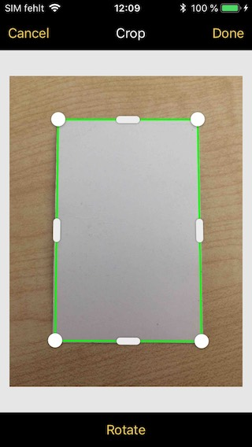

Scanbot SDK React Native Module
⚠️ This documentation is for the latest released version 2.x of the Scanbot SDK React Native Module (react-native-scanbot-sdk@2.x)!
Click here for the version 1.x
Introduction
The Scanbot SDK brings scanning and document creation capabilities to your mobile apps. It contains modules which are individually licensable as license packages. For more details visit our website https://scanbot.io/sdk.html
This module provides implementations of Scanbot SDK for iOS and Android.
Following Package I + II functionality is covered by this module:
Package I
- Document Scanning with User Guidance
- Cropping UI
- Document Detection
- Image Filters
- PDF Creation
- Barcode and QR Code Scanning
Package II
- OCR
- MRZ Scanning
Requirements
Tools
- Node.js, npm
- React Native 0.47+ (latest available version is highly recommended)
- Android SDK (API Level 16+), Platforms and Developer Tools
- Xcode + Xcode Command Line Tools (for iOS Apps)
Supported Mobile Platforms
- Android 4.1 (API Level 16) and higher
- iOS 9 and higher
Please note:
- The Scanbot SDK module is available only for Android and iOS
- The module does not work on other platforms like Windows Phone, Desktop or WebApps
- We don’t support rooted Android devices (custom ROMs)
Hardware
- Smartphones and Tablets with a rear-facing camera with autofocus
Simulators / Emulators
While it is possible to test your App with the Scanbot SDK module on simulators/emulators, we strongly recommend to use real Android/iOS devices. Depending on the emulated Camera you may not be able to test/evaluate the full functionality of the Scanbot SDK module.
Example App
Check out our Example App on GitHub:
Installation
The Scanbot SDK module is available as npm package.
You can simply install and add it to your App by following command:
npm install --save react-native-scanbot-sdk
After the installation of the npm package you have to link the native dependencies of the Scanbot SDK module into the native build files of your project:
react-native link react-native-scanbot-sdk
Android Settings
Scanbot SDK Maven repositories
This React Native module depends on Scanbot SDK for Android (supported architectures are armeabi-v7a and x86).
The Scanbot SDK for Android is distributed through our private Maven repositories.
Please add these repositories in your android/build.gradle file in the section allprojects > repositories:
allprojects {
repositories {
mavenLocal()
jcenter()
maven {
// All of React Native (JS, Obj-C sources, Android binaries) is installed from npm
url "$rootDir/../node_modules/react-native/android"
}
// Scanbot SDK Maven repositories:
maven {
url 'https://nexus.scanbot.io/nexus/content/repositories/releases/'
}
maven {
url 'https://nexus.scanbot.io/nexus/content/repositories/snapshots/'
}
}
}
Tuning the Android Manifest
Since your application works with images it is highly recommended to add the property android:largeHeap="true"
in the <application> element of your android/app/src/main/AndroidManifest.xml file.
Processing images is a memory intensive task and this property will ensure your app has enough heap allocated to avoid OutOfMemoryError exceptions.
<application
android:largeHeap="true"
...
</application>
iOS Settings in Xcode
After installing and linking the module, your Xcode project must be configured to utilize the Scanbot SDK Framework for iOS.
Please make sure RNScanbotSDK.xcodeproj was added correctly by react-native link command as a sub-project in Libraries folder of your project.
Also, libRNScanbotSDK.a should be available in the Linked Frameworks and Libraries section of your application main target.
And last but not least, you need to add ScanbotSDK.framework to your application project’s Embedded Binaries section.
-
Open the generated Xcode project file with Xcode IDE:
<YOUR_APP_PROJECT_PATH>/ios/<YOUR_APP_NAME>.xcodeproj -
Go to
TARGETSsettings and find the sectionEmbedded Binaries. Then add theScanbotSDK.framework(situated innode_modules/react-native-scanbot-sdk/ios) toEmbedded Binaries. TheScanbotSDK.frameworkis provided with the Scanbot SDK React Native Module.

- Point Xcode to correct path for framework searching. Navigate to “Search Paths” section of your target’s “Build Settings” and add a new string to “Framework Search Paths”:
${PROJECT_DIR}/../node_modules/react-native-scanbot-sdk/ios

Also, if you are planning to use the OCR functionality of Scanbot SDK, please add SBSDKLanguageData folder to “Copy Bundle Resources” build phase in project settings.

Please note: If ScanbotSDK.framework is put into “Linked Frameworks and Libraries” and not into “Embedded Binaries”, then the module will not work. The project will compile but your App will crash right after the start!
Permissions
In order to operate correctly an application that utilizes ScanbotSDK module must have all required permissions to your App. Here is a listing of those permissions:
Android (must be added in your android/app/src/main/AndroidManifest.xml file)
<uses-permission android:name="android.permission.CAMERA" />- This permission is used for the camera views.<uses-feature android:name="android.hardware.camera" />- Camera hardware features.<uses-permission android:name="android.permission.WRITE_EXTERNAL_STORAGE" />- Required to handle temporary files (e.g. PDF creation).<uses-permission android:name="android.permission.READ_EXTERNAL_STORAGE" />- Required to handle temporary files (e.g. PDF creation).
iOS (must be added in your Info.plist file)
NSCameraUsageDescription- “Privacy - Camera Usage Description”. As value describe why your app wants to access the device’s camera.
API Reference
ScanbotSdk- .initializeSDK -
function - .isLicenseValid -
function - .detectDocument -
function - .rotateImage -
function - .applyImageFilter -
function - .createPdf -
function - .writeTiff -
function - .getOcrConfigs -
function - .performOcr -
function - .createPage -
function - .setDocumentImage -
function - .detectDocumentOnPage -
function - .applyImageFilterOnPage -
function - .getFilteredDocumentPreviewUri -
function - .rotatePage -
function - .removePage -
function - .cleanup -
function
- .initializeSDK -
ScanbotSdk.UI- .startDocumentScanner -
function - .startCroppingScreen -
function - .startMrzScanner -
function - .startBarcodeScanner -
function
- .startDocumentScanner -
- Constants
- DetectionResult -
string - ImageFilter -
string - OCROutputFormat -
string
- DetectionResult -
Getting Started
Initialize SDK
ScanbotSDK.initializeSDK(options): Promise
The Scanbot SDK must be initialized before usage. Make sure to run the initialization only once per app lifetime.
Example code for initialization:
import ScanbotSDK from 'react-native-scanbot-sdk';
async function initializeSDK() {
let options = {
licenseKey: '', // optional license key (empty for trial mode)
loggingEnabled: true
}
try {
await ScanbotSDK.initializeSDK(options), (result);
// initialization succeeded
} catch (err) {
// initialization failed
}
}
License Key
In order to run the Scanbot SDK functionality within your production app you have to purchase and use a valid Scanbot SDK license.
Each license key is valid only for a given app bundle identifier. The license also defines which modules you are allowed to use. The usage of unlicensed modules will log an error to the console and terminate the app. If your license has expired any calls of the Scanbot SDK will terminate your app.
Example code for defining and using the license key:
// Please note: this is just an example license key string (it's not a valid license)
let myLicenseKey =
"fXbN2PmyqEAZ+btdkSIS36TuX2j/EE5qxVNcZMXYErbLQ" +
"3OBnE10aOQxYI8L4UKwHiZ63jthvoFwUevttctBk0wVJ7Z" +
"+Psz3/Ry8w7pXvfpB1o+JrnzGGcfwBnRi/5raQ2THDeokR" +
"RB1keky2VBOFYbCfYt3Hqms5txF2z70PE/SBTMTIVuxL7q" +
"1xcHDHclbEBriDtrHw8Pmhh9FqTg/r/4kRN/oEX37QGp+Y" +
"3ogwIBbSmV+Cv+VuwtI31uXY3/GkyN/pSJZspIl+exwQDv" +
"O0O1/R/oAURpfM4ydaWReRJtjW8+b1r9rUgPERguaXfcse" +
"HlnclItgDfBHzUUFJJU/g==\nU2NhbmJvdFNESwppby5zY" +
"2FuYm90LmRlbW8ueGFtYXJpbgoxNDg0NjExMTk5CjcxNjc" +
"KMw==\n";
let options = {
licenseKey: myLicenseKey
loggingEnabled: true
}
ScanbotSDK.initializeSDK(options)
.then(() => {
// success
}).catch(err => {
//error
});
Trial License
The Scanbot SDK will run without a license for one minute per session! To get an unrestricted “no-strings-attached” 30 day trial license, please submit the Trial License Form on our website.
Please kindly note that a trial license can only be used in a development and staging environment. You are not allowed to publish your app to the App Store, Play Store or any 3rd party Android App Store with a trial license.
Purchase a Production License
You can check and purchase the Scanbot SDK licenses here: https://scanbot.io/sdk.html.
App Identifier
Every app has a unique identifier (sometimes also known as “bundle identifier” or “application ID”). Your license will be bound to this identifier. To request a trial license or purchase a production license you have to provide us the bundle identifier of your app.
Logging
When initializing the Scanbot SDK you can enable logging of the SDK. By default logging is disabled.
let options = {
licenseKey: myLicenseKey
loggingEnabled: true
}
const promise = ScanbotSDK.initializeSDK(options);
On Android logs are printed into LogCat as well as saved on the device. You can find them in Environment.getExternalStorageDirectory()/debug_logs/[package_name]. Usually it is /sdcard/debug_logs/[package_name].
The easiest way to check the log outputs on Android is to use the Android Debug Bridge (adb).
(e.g. $ adb -s <DEVICE_ID> shell "logcat")
On iOS all logs are printed to the console. Please use Xcode to check the log outputs.
You can also see application logs in the terminal by issuing react-native log-android or react-native log-ios.
There will be no log files created by the Scanbot SDK module.
Please note: While it may be useful for development, consider switching logging OFF in production builds for security and performance reasons!
Image Quality / Compression
initializeSDK can take two more optional parameters that specify the image storage format and compression for temporary images. Temporary images are all images created by the document scanner, cropping UI, as well as all image manipulation functions like applyImageFilter.
var options = {
storageImageFormat: 'JPG',
storageImageQuality: 80,
};
ScanbotSDK.initializeSDK(options);
storageImageQuality- defines the quality factor of JPEG images. The value must be between 1 and 100, where 100 means maximum quality and largest file size. The default value is 80 which is a good compromise between image file size and document legibility.storageImageFormat- either'JPG'or'PNG'. The default value is'JPG'.
Updating the license in production apps
To renew an expired license or extend a valid license with new Scanbot SDK features, you will have to update your app in the App Store or Play Store. The expiration date and the feature list of a license are an encrypted data part of the license key string. Which means a renewal or extension of a license will cause a new license key string to be generated.
License check in production apps
If your Scanbot SDK license has expired, any call of the Scanbot SDK API will terminate your app or result in an error.
To prevent this you should always check for license expiration during the runtime by calling the method ScanbotSDK.isLicenseValid(..).
If the result of the successCallback returns false, you should disable any usage of the Scanbot SDK functions or UI components in your app.
We highly recommend to implement a suitable handling of this case in your app!
ScanbotSDK.isLicenseValid(): Promise<boolean>
Use this function to check the current state of the license. The SDK must be initialized.
truemeans the Scanbot SDK license is valid and all features can be used normally.falsemeans the license is not valid and any call of the Scanbot SDK API will terminate your app or result in an error.
Example code for checking the license status:
let options = {
licenseKey: myLicenseKey
loggingEnabled: true
}
async function() {
await ScanbotSdk.initializeSDK(options);
if (!await ScanbotSdk.isLicenseValid()) {
// my license is invalid
}
}
Ready-to-use UI
Configuration
Settings controlling color are expected to be passed as strings in the '#RRGGBB' format.
Pages
The Scanbot SDK provides a ready-to-use UI for document scanning and cropping. Both components use the notion of a ‘page’ as a data model for the scanning and cropping activities. An page object has the following fields:
interface Page {
pageId: string;
polygon: Point[];
detectionResult: DetectionStatus;
originalImageFileUri: string;
documentImageFileUri?: string;
originalPreviewImageFileUri: string;
documentPreviewImageFileUri?: string;
}
The fields are:
pageId- a string identifying the page in the internal page file storagepolygon- the page’s cropping polygon as calculated by a document detection operation or as set by the cropping UI. Modifying the polygon will change the polygon as shown in the cropping UI but will not automatically re-crop the original image.detectionResult- the detection result of the document detection operation that produced the page (either the document scanner ordetectDocument()).originalImageFileUri- file URI of the original imagedocumentImageFileUri- file URI of the cropped document image (if document detection was successful)originalPreviewImageFileUri- file URI of a screen-sized preview of the original imagedocumentPreviewImageFileUri- file URI of a screen-sized preview of the document image
Pages are stored in an internal page file storage, where the pageId serves as a name prefix for the stored image files. Operations that modify pages work in-place. That is, for example, rotatePage() overwrites the page’s image files with their rotated versions. This behavior differs from the behavior of raw image functions like rotateImage() which always create a new file. All URI properties of a page have a ?minihash= query parameter appended to them with the hash of a portion of the image file. Different images will almost always have a different hash and therefore a different URI, which will force the WebView to reload the page’s images when changed.
Document Scanner
ScanbotSdk.UI.startDocumentScanner(configuration: DocumentScannerConfiguration): Promise
Starts the ready-to-use Document Scanner for guided, automatic document scanning.

Result
The promise resolves to an object with the following properties:
status-'OK'if some pages were snapped,'CANCELED'if the user canceled the operation.pages- an array of pages. If multi-page mode is enabled, this array may contain more than one page. If multi-page mode is not enabled andstatusis'OK', this array contains one object.
Options:
All UI configuration options are optional.
interface DocumentScannerConfiguration {
/**
* The minimum score in percent (0 - 100) of the perspective distortion to accept a detected document.
* Default is 75.0.
*/
acceptedAngleScore: number,
/**
* The minimum document width or height in percent (0 - 100) of the screen size to accept a detected document.
* Default is 80.0.
*/
acceptedSizeScore: number,
/**
* Controls whether the auto-snapping toggle button is hidden or not.
*/
autoSnappingButtonHidden: boolean,
/**
* Title of the auto-snapping toggle button.
*/
autoSnappingButtonTitle: string,
/**
* When auto-snapping is enabled the document scanner will take a photo automatically
* when a document is detected, conditions are good and the auto-snapping time-out elapses. In this
* mode the user can still tap the shutter button to snap a document.
*/
autoSnappingEnabled: boolean,
/**
* Controls the auto-snapping speed. Sensitivity must be within the 0..1 range.
* A value of 1.0 triggers automatic capturing immediately, a value of 0.0 delays the automatic by 3 seconds.
* The default value is 0.66 (2 seconds)
*/
autoSnappingSensitivity: number,
/**
* The background color of the bottom shutter-bar.
*/
bottomBarBackgroundColor: string,
/**
* The color of the title of all buttons in the bottom shutter-bar (Cancel button, etc.),
* as well as the camera permission prompt button.
*/
bottomBarButtonsColor: string,
/**
* The color of the camera background (relevant only when the camera preview mode is CameraPreviewMode.FIT_IN).
*/
cameraBackgroundColor: string,
/**
* Preview mode of the camera: Fit-In or Fill-In.
* Optional, default is Fit-In.
*/
cameraPreviewMode: CameraPreviewMode,
/**
* Title of the cancel button.
*/
cancelButtonTitle: string,
/**
* Title of the button that opens the screen where the user can allow
* the usage of the camera by the app.
*/
enableCameraButtonTitle: string,
/**
* Text that will be displayed when the app
* is not allowed to use the camera, prompting the user
* to enable the usage of the camera.
*/
enableCameraExplanationText: string,
/**
* Controls whether the flash toggle button is hidden or not.
*/
flashButtonHidden: boolean,
/**
* Title of the flash toggle button.
*/
flashButtonTitle: string,
/**
* Controls whether the flash should be initially enabled.
* The default value is FALSE.
*/
flashEnabled: boolean,
flashImageButtonHidden: boolean,
/**
* Sets whether to ignore the OK_BUT_BAD_ASPECT_RATIO detection status.
* By default BadAspectRatio is not ignored.
*/
ignoreBadAspectRatio: boolean,
/**
* The image scaling factor. The factor must be within the 0..1 range.
* A factor of 1 means that the resulting images retain their original size.
* When the factor is less than 1, resulting images will be made smaller by that factor.
* By default the scale is 1.
*/
imageScale: number,
/**
* Controls whether the multi-page toggle button is hidden or not.
*/
multiPageButtonHidden: boolean,
/**
* Title of the multi-page mode toggle button.
*/
multiPageButtonTitle: string,
/**
* Controls multi-page mode. When enabled, the user can take multiple document photos before
* closing the screen by tapping the page counter button. When disabled, the screen will be
* closed immediately after the first document photo is made.
* The default value is FALSE.
*/
multiPageEnabled: boolean,
/**
* Orientation lock mode of the camera: PORTRAIT or LANDSCAPE.
* By default the camera orientation is not locked.
*/
orientationLockMode: CameraOrientationMode,
/**
* Title suffix of the button that finishes the document scanning when multi-page scanning is enabled.
* The button's title has the format "# Pages", where # shows the number of images captured up to now and the
* suffix "Pages" is set using this method.
*/
pageCounterButtonTitle: string,
/**
* The background color of the detected document outline when the document's angle, size or aspect ratio
* is not yet sufficiently good.
* (All net.doo.snap.lib.detector.DetectionResult with OK_BUT_XXX).
*/
polygonBackgroundColor: string,
/**
* The background color of the detected document outline when we are ready to snap OK.
*/
polygonBackgroundColorOK: string,
/**
* The color of the detected document outline when the document's angle, size or aspect ratio
* is not yet sufficiently good.
* (All detection statuses in net.doo.snap.lib.detector.DetectionResult that have the OK_BUT_XXX prefix).
*/
polygonColor: string,
/**
* The color of the detected document outline when we are ready to snap OK.
*/
polygonColorOK: string,
/**
* Width of the detected document outline.
*/
polygonLineWidth: number,
/**
* The foreground color of the shutter button in auto-snapping mode.
*/
shutterButtonAutoInnerColor: string,
/**
* The background color of the shutter button in auto-snapping mode.
*/
shutterButtonAutoOuterColor: string,
shutterButtonIndicatorColor: string,
/**
* The foreground color of the shutter button in manual mode.
*/
shutterButtonManualInnerColor: string,
/**
* The background color of the shutter button in manual mode.
*/
shutterButtonManualOuterColor: string,
/**
* Text hint that will be shown when the current detection status is OK_BUT_BAD_ANGLES
*/
textHintBadAngles: string,
/**
* Text hint that will be shown when the current detection status is OK_BUT_BAD_ASPECT_RATIO
*/
textHintBadAspectRatio: string,
/**
* Text hint that will be shown when the current detection status is ERROR_NOTHING_DETECTED
*/
textHintNothingDetected: string,
/**
* Text hint that will be shown when the current detection status is OK
*/
textHintOK: string,
/**
* Text hint that will be shown when the current detection status is ERROR_TOO_DARK
*/
textHintTooDark: string,
/**
* Text hint that will be shown when the current detection status is ERROR_TOO_NOISY
*/
textHintTooNoisy: string,
/**
* Text hint that will be shown when the current detection status is OK_BUT_TOO_SMALL
*/
textHintTooSmall: string,
/**
* The background color of the top toolbar.
*/
topBarBackgroundColor: string,
/**
* The color of all active toggle buttons in the toolbar.
*/
topBarButtonsActiveColor: string,
/**
* The color of all inactive toggle buttons in the toolbar.
*/
topBarButtonsInactiveColor: string,
/**
* The background color of the user guidance hints.
*/
userGuidanceBackgroundColor: string,
/**
* The text color of the user guidance hints.
*/
userGuidanceTextColor: string,
};
Cropping UI
ScanbotSdk.UI.startCroppingScreen(page: Page, options: CroppingScreenConfiguration)
The Cropping UI provides functionality for manual cropping and rotation of an image. It uses the edge detection algorithm of the Scanbot SDK and containts some smart UI elements like magnetic lines and a magnifier.

Returns
The promise resolves to an object with the following properties:
status-'OK'if the user modified the page,'CANCELED'if the user canceled the operation.page- the cropped page.
Options:
The cropping UI requires a page object. A page object can be initially created using the Document Scanner or createPage().
All UI configuration settings are optional.
var options = {
/**
* Background color of the main screen.
*/
backgroundColor: string,
/**
* Background color of the bottom toolbar.
*/
bottomBarBackgroundColor: string,
/**
* Color of the titles of all buttons in the bottom toolbar (Rotate button).
*/
bottomBarButtonsColor: string,
/**
* Title of the cancel button.
*/
cancelButtonTitle: string,
/**
* Title of the Done button.
*/
doneButtonTitle: string,
/**
* Default color of the cropping outline.
*/
polygonColor: string,
/**
* Outline color of magnetically snapped edges.
*/
polygonColorMagnetic: string,
/**
* Width of the cropping outline.
*/
polygonLineWidth: number,
/**
* Title of the Rotate button.
*/
rotateButtonTitle: string,
titleColor: string,
/**
* Background color of the top toolbar.
*/
topBarBackgroundColor: string,
/**
* Color of the titles of all buttons in the top toolbar (Cancel and Done buttons).
*/
topBarButtonsColor: string,
topBarTitle: string,
}
Barcode and QR Code Scanning UI
ScanbotSdk.UI.startBarcodeScanner(configuration: BarcodeScannerConfiguration): Promise
Opens a Scanning UI for barcodes and QR codes.

Returns
The promise resolves to an object with the following properties:
status-'OK'if the user modified the ,'CANCELED'if the user canceled the operation.format- Format of detected barcode/QR code (e.g. “CODE_128”, “EAN_13”, “QR_CODE”, etc).value- Text value of detected barcode/QR code.
Options:
All settings are optional.
configuration.barcodeFormats is an optional array of barcode formats that act as a detection filter. By default all supported formats will be detected.
var options = {
barcodeFormats: ['QR_CODE', 'UPC_EAN', /* etc... */],
bottomButtonsActiveColor: string,
bottomButtonsInactiveColor: string,
/**
* Background color outside of the finder window.
*/
cameraOverlayColor: string,
/**
* Title of the cancel button.
*/
cancelButtonTitle: string,
/**
* Title of the button that opens the screen where the user can allow
* the usage of the camera by the app.
*/
enableCameraButtonTitle: string,
/**
* Text that will be displayed when the app
* is not allowed to use the camera, prompting the user
* to enable the usage of the camera.
*/
enableCameraExplanationText: string,
/**
* Height of the finder window in pixels.
*/
finderHeight: number,
/**
* Color of the finder window's outline.
*/
finderLineColor: string,
/**
* Thickness of the finder window's outline.
*/
finderLineWidth: number,
/**
* Text hint shown under the finder window.
*/
finderTextHint: string,
/**
* Color of the text hint under the finder window.
*/
finderTextHintColor: string,
/**
* Width of the finder window in pixels.
*/
finderWidth: number,
flashButtonTitle: string,
/**
* Controls whether the flash should be initially enabled.
* The default value is FALSE.
*/
flashEnabled: boolean,
/**
* Orientation lock mode of the camera: PORTRAIT or LANDSCAPE.
* By default the camera orientation is not locked.
*/
orientationLockMode: CameraOrientationMode,
/**
* Controls whether to play a beep sound after a successful detection.
* Default value is TRUE.
*/
successBeepEnabled: boolean,
/**
* Background color of the top toolbar.
*/
topBarBackgroundColor: string,
/**
* Color of the titles of all buttons in the top toolbar.
*/
topBarButtonsColor: string,
}
Machine-readable Zone Scanner
ScanbotSdk.UI.startMrzScanner(configuration: MrzScannerConfiguration)
Opens a Scanner for machine-readable zones.

Returns
The promise resolves to an object with the following properties:
status-'OK'if the user modified the ,'CANCELED'if the user canceled the operation.fields- an array of MRZ fields. Each field is an object with the following properties:field.name- the field typefield.value- the value of the field.field.confidence- confidence in the accuracy ofvalue
Options:
The finder window must have a width-to-height of 5, otherwise the detection process will fail. All other settings are optional.
interface MrzScannerConfiguration {
bottomButtonsActiveColor: string,
bottomButtonsInactiveColor: string,
/**
* Background color outside of the finder window.
*/
cameraOverlayColor: string,
/**
* Title of the cancel button.
*/
cancelButtonTitle: string,
/**
* Title of the button that opens the screen where the user can allow
* the usage of the camera by the app.
*/
enableCameraButtonTitle: string,
/**
* Text that will be displayed when the app
* is not allowed to use the camera, prompting the user
* to enable the usage of the camera.
*/
enableCameraExplanationText: string,
/**
* Height of the finder window in pixels.
*/
finderHeight: number,
/**
* Color of the finder window's outline.
*/
finderLineColor: string,
/**
* Thickness of the finder window's outline.
*/
finderLineWidth: number,
/**
* Text hint shown under the finder window.
*/
finderTextHint: string,
/**
* Color of the text hint under the finder window.
*/
finderTextHintColor: string,
/**
* Width of the finder window in pixels.
*/
finderWidth: number,
flashButtonTitle: string,
/**
* Controls whether the flash should be initially enabled.
* The default value is FALSE.
*/
flashEnabled: boolean,
/**
* Orientation lock mode of the camera: PORTRAIT or LANDSCAPE.
* By default the camera orientation is not locked.
*/
orientationLockMode: CameraOrientationMode,
/**
* Controls whether to play a beep sound after a successful detection.
* Default value is TRUE.
*/
successBeepEnabled: boolean,
/**
* Background color of the top toolbar.
*/
topBarBackgroundColor: string,
/**
* Color of the titles of all buttons in the top toolbar.
*/
topBarButtonsColor: string,
}
Page operations
ScanbotSdk.createPage(imageUri: string): Promise<Page>
Creates a page from an image (presumably the image of an uncropped document).
Returns
The promise resolves to a page object. As the page hasn’t been cropped yet, the documentImageFileUri and documentPreviewImageFileUri properties will be empty.
ScanbotSdk.setDocumentImage(page: Page, imageUri: string): Promise<Page>
Replaces the document image of a page. The passed image file will be copied into the internal page file storage.
page- the page to modify.imageUri- the URI of an image file with which to overwrite the page’s document image.
Returns
The promise resolves to a page object with the replaced document image.
ScanbotSdk.detectDocumentOnPage(page: Page): Promise<Page>
Runs document detection on the original image of the given page. The detection status, polygon and cropped document image are returned as a new page object in the returned promise.
ScanbotSdk.applyImageFilterOnPage(page: Page, filter: ImageFilter): Promise<Page>
Applies a filter on the unfiltered document image of a page.
page- the page to filter.imageFilter- the image filter to apply. The special value'NONE'will remove any previously applied filter from the document image.
ScanbotSdk.getFilteredDocumentPreviewUri(page: Page, imageFilter: ImageFilter): Promise<string>
Creates a preview image of a filter applied onto the document of a page. Does not modify the document image of the passed page.
page- the page for which to create a filtered document preview.imageFilter- the image filter to apply. The special value'NONE'will remove any previously applied filter from the document image.
Returns
A file URI with the preview image of the filtered document page.
ScanbotSdk.rotatePage(page: Page, times: number)
Rotates a page counter-clockwise in increments of 90 degrees.
page- the page to rotate.times- the number of counter-clockwise 90 degrees rotations to apply.
ScanbotSdk.removePage(page: Page): Promise
Removes a page from the internal file storage.
Raw image operations
Document Detection
ScanbotSDK.detectDocument(imageFileUri: string): Promise
The Scanbot SDK uses digital image processing algorithms to find rectangular, document like, polygons in a digital image. This function applies edge dectection and processes all image operations in a background thread. There will be no UI started. As input a file URI of an image must be passed. The output contains the Detection Result as string and on success the cropped and perspective corrected image as a new file as well as the detected polygon. If there was no document detected the result enum provides the exact reason (noisy background, too dark, etc). The input image file will not be modified.
Returns
Returns object with the following fields
documentImageFileUri- File URI of the detected and cropped/warped document image as JPEG ('file:///...'). Maybenullif detection was not successfull.polygon- Contains the detected polygon as array. Maybe empty if detection was not successfull.detectionResult- The Detection Result.
Rotate Image
ScanbotSDK.rotateImage(imageFileUri: string, degrees: number): Promise<string>
Rotates an image by given degrees value. As input a file URI of the image must be passed. The output image will be a new file. The input image file will not be modified.
Returns
Promise returning the file URI of the rotated result image.
Apply Image Filter
ScanbotSDK.applyImageFilter(imageFileUri: string, filter: ImageFilter): Promise<string>
Applies filter on an image. As input a file URI of the image must be passed. The output image will be a new file. The input image file will not be modified.
imageFileUri- file URI of the image to rotatefilter- ImageFilter string value.
Returns
File URI to the rotated image file.
PDF Creation
ScanbotSDK.createPDF(imageFileUris: string[]): Promise
The Scanbot SDK renders given images into a PDF document and stores it as a file. For each image a separate page is generated.
imageFileUris- Input images as an array of file URIs in proper order (image element 1 => page 1, etc).
Returns
Returns an object with the following properties:
pdfFileUri- file URI with the path to the created PDF file
OCR - Optical Character Recognition
The OCR feature is a part of the Scanbot SDK Package II. It is based on the Tesseract OCR Engine with some modifications and enhancements.
ScanbotSDK.getOCRConfigs(): Promise
Use this function to get Scanbot SDK OCR properties of the current App installation.
Returns
Returns an object with the following properties:
languageDataPath- Contains absolute file URI of the directory where to place the OCR training data files. You have to copy the corresponding*.traineddatafiles into this directory. The directory is a part of your App. If you uninstall the app, this directory will also be removed.installedLanguages- Returns an array of current installed OCR languages (e.g.["en", "fr"]). The Scanbot SDK uses thelanguageDataPathdirectory to determine installed OCR languages.
ScanbotSDK.performOCR(imageFileUris: string[], languages: string[], options): Promise
This function takes an array of images and performs Optical Character Recognition on each of the images. As result the recognized text can be returned as plain text or a composed PDF file containing selectable and searchable text.
imageFileUris- Input images as an array of file URIs in proper order (image element 1 => page 1, etc).languages- An array with OCR languages of the text to be recognized (e.g.["en", "de"]). The number of languages has an impact on the performance - the more languages, the slower the recognition process. The OCR operation will fail with an error if some of the specified languages are missing. Please use the getOcrConfigs function to make sure that desired languages are installed.options- an object containing some of the following properties:outputFormat- OcrOutputFormat enum value to specify the result.
Returns
The promise resolves to an object with the following properties:
plainText- Contains the recognized plain text if chosen.pdfFileUri- File URI of the composed PDF file ('file:///...') if chosen.
OCR Languages and Data Files
For each desired OCR language a corresponding training data file (aka. tessdata) must be installed in the languageDataPath directory of the Scanbot SDK.
Furthermore the special data file osd.traineddata is required and must be installed. It is used for orientation and script detection.
The Scanbot SDK module ships with no training data files by default to keep the module package small in size.
Download OCR files
Please find a list of all supported languages in the Tesseract wiki.
Note: Scanbot SDK supports training data files of Tesseract version 3.0x only.
Language Codes
The Tesseract language data files are identified by a 3-letter language code. For example:
eng- Englishdeu- German- etc.
The Scanbot SDK API uses a 2-letter ISO code:
en- Englishde- German- etc.
Example:
If you want to perform OCR with languages English and German, you have to download and install the following data files:
eng.traineddata- language file for Englishdeu.traineddata- language file for Germanosd.traineddata- special data file for orientation and script detection
In the Scanbot SDK module then use languages: ["en", "de"].
OCR Output Format values
Following output formats can be specified for OCR result:
PLAIN_TEXT- Returns the recognized text as plain text only.PDF_FILE- Creates a composed PDF file containing selectable and searchable text.FULL_OCR_RESULT- Full result: composed PDF file and recognized plain text.
Cleanup
ScanbotSDK.cleanup(): Promise
By calling ths function all temporary output files generated by the Scanbot SDK module will be deleted.
File Handling & Storage Concept
The Scanbot SDK module works with file URIs. That means all input and output files (images, PDFs, etc) are identified by a file URI.
Please note that a file URI is not just a file path : "file:///some/file/path/.." vs. "/some/file/path/.."
Examples of valid file URIs:
-
On Android:
file:///storage/emulated/0/Android/data/my.awesome.app/cache/sbsdk-temp/ce8de3c4-3c96-4ce1-b285-483d01e1dc9a.jpg -
On iOS:
file:///var/mobile/Containers/Data/Application/D2BF9FB2-1024-4418-99B2-3709AB2C171E/Documents/sbsdk-temp/05719BF8-63DB-4C8A-9A57-25B233AED33C.jpg
All output files generated by the Scanbot SDK module are a kind of temporary files. We recommend to copy, move or delete the files you get from callbacks to a appropriate storage place.
There is no automatic file clean mechanism in the module, because only your App can decide when is the perfect time to remove a file.
To avoid storage space issues caused by temporary files please implement a suitable hook for the cleanup function in your App.
Detection Result values
OK- Document detection was successful. The detected contour looks like a valid document.OK_BUT_BAD_ANGLES- Document was detected, but the perspective is not perfect.OK_BUT_BAD_ASPECT_RATIO- Document was detected, but it has a wrong rotation relatively to the camera sensor.OK_BUT_TOO_SMALL- Document was detected, but it doesn’t fill the most best area in the image rect.ERROR_TOO_DARK- Document was not found, most likely because of bad lightning conditions.ERROR_TOO_NOISY- Document was not found, most likely because there is too much background noise (maybe too many other objects on the table, or background texture is not monotonic).ERROR_NOTHING_DETECTED- No document was found.
Image Filter values
Supported image filters: Supported image filters:
COLOR_ENHANCED- Optimizes colors, contrast and brightness.GRAYSCALE- Grayscale filterBINARIZED- Standard binarization filter with contrast optimization. Creates a grayscaled 8-bit image with mostly black or white pixels.COLOR_DOCUMENT- MagicColor filter. Fixes white-balance and cleans up the background.PURE_BINARIZED- A filter for binarizing an image. Creates an image with pixel values set to either pure black or pure white.BACKGROUND_CLEAN- Cleans up the background and tries to preserve photos within the image.BLACK_AND_WHITE- Black and white filter with background cleaning. Creates a grayscaled 8-bit image with mostly black or white pixels.
Polygon
The Scanbot SDK polygon is a list with 4 float points (one for each corner). Each point has coordinates in range [0..1], representing position relative to image size. For instance, if a point has the coordinates (0.5, 0.5), it means that it is located exactly in the center of the image.
Example code of a detected polygon as JSON result:
"polygon": [
{"y":0.046, "x":0.13066667},
{"y":0.035, "x":0.91066664},
{"y":0.92, "x":0.9346667},
{"y":0.916, "x":0.10666667}
]
Image Quality / Compression
The imageCompressionQuality parameter defines the quality factor of the JPEG output image. The value must be in a range of 1-100,
where 100 means the least quality loss.
This parameter is optional. The default value used by the Scanbot SDK module is 80.
Release history
Release history for version 2.x
2.0.3
- New function
recognizeMrz(imageFileUri: string)to recognize MRZ data on image file.
2.0.2
- Android: Various bug fixes and improvements in methods
getFilteredDocumentPreviewUri()andapplyImageFilterOnPage() - Under the hood: Upgraded the native Scanbot Android SDK to v1.33.3
- Removed the
allowBackupflag fromAndroidManifest.xmlinio.scanbot:sdk-package-uilibrary
- Removed the
- iOS: Added the
?minihash=query parameter in result ofgetFilteredDocumentPreviewUri() - Under the hood: Upgraded the native Scanbot iOS SDK to v1.7.4
- Fixed memory leaks in Document Scanner
2.0.1
- iOS:
- Fixed a bug in PDF creation
- Fixed property mapping of text key
textHintOK
- Under the hood: Upgraded the native Scanbot iOS SDK to v1.7.3
2.0.0
- New Document Scanner UI and Cropping UI - based on the native Ready-To-Use UI Components of the Scanbot SDK for Android and iOS.
- Multi-page scanning in Document Scanner UI
- Barcode Scanner UI
- MRZ Scanner UI
- TIFF support: provides creation of 1-bit TIFF images with multi-page support
- New image filter types:
PURE_BINARIZED- Creates an image with pixel values set to either pure black or pure white.BACKGROUND_CLEAN- Cleans up the background and tries to preserve photos within the image.BLACK_AND_WHITE- Black and white filter with background cleaning. Creates a grayscaled 8-bit image with mostly black or white pixels.
- New Scanbot SDK JS API:
- Promise-based design (compatible with async/await)
- Typings provide contextual help in JS IDEs
- Under the hood: Upgraded the native Scanbot Android SDK to v1.33.0
- Under the hood: Upgraded the native Scanbot iOS SDK to v1.7.2:
- Dropped support for iOS 8
- Minor bug fixes and improvements
Release history for version 1.x
See the v1.x documentation
Libraries and Licenses
Open Source libraries used in the Scanbot SDK for Android version 1.34.0:
Android PDF Writer version 1.0.8
Copyright (c) 2010 - 2013, Javier Santo Domingo (j-a-s-d@coderesearchlabs.com).
All rights reserved.
Android PDF Writer (APW) is a simple Java library to generate simple PDF documents in Google's Android devices distributed under a 2-clause BSD license (https://github.com/Turbo87/apwlibrary/blob/master/doc/APW.pdf).
Redistribution and use in source and binary forms, with or without modification, are permitted provided that the following conditions are met:
Redistributions of source code must retain the above copyright notice, this list of conditions and the following disclaimer.
Redistributions in binary form must reproduce the above copyright notice, this list of conditions and the following disclaimer in the documentation and/or other materials provided with the distribution.
THIS SOFTWARE IS PROVIDED BY THE COPYRIGHT HOLDERS AND CONTRIBUTORS "AS IS" AND ANY EXPRESS OR IMPLIED WARRANTIES, INCLUDING, BUT NOT LIMITED TO, THE IMPLIED WARRANTIES OF MERCHANTABILITY AND FITNESS FOR A PARTICULAR PURPOSE ARE DISCLAIMED. IN NO EVENT SHALL THE COPYRIGHT HOLDER OR CONTRIBUTORS BE LIABLE FOR ANY DIRECT, INDIRECT, INCIDENTAL, SPECIAL, EXEMPLARY, OR CONSEQUENTIAL DAMAGES (INCLUDING, BUT NOT LIMITED TO, PROCUREMENT OF SUBSTITUTE GOODS OR SERVICES; LOSS OF USE, DATA, OR PROFITS; OR BUSINESS INTERRUPTION) HOWEVER CAUSED AND ON ANY THEORY OF LIABILITY, WHETHER IN CONTRACT, STRICT LIABILITY, OR TORT (INCLUDING NEGLIGENCE OR OTHERWISE) ARISING IN ANY WAY OUT OF THE USE OF THIS SOFTWARE, EVEN IF ADVISED OF THE POSSIBILITY OF SUCH DAMAGE.
This software includes several classes from the Android Open Source Project Copyright 2010 The Android Open Source Project. Licensed under the Apache License, Version 2.0 (the License); you may not use this file except in compliance with the License. You may obtain a copy of the License at http://www.apache.org/licenses/LICENSE-2.0
Unless required by applicable law or agreed to in writing, software distributed under the License is distributed on an AS IS BASIS, WITHOUT WARRANTIES OR CONDITIONS OF ANY KIND, either express or implied. See the License for the specific language governing permissions and limitations under the License.
Animal Sniffer Annotations version 1.14
This library is distributed under the terms of a MIT License
(https://mvnrepository.com/artifact/org.codehaus.mojo/animal-sniffer-annotations/1.14)
Permission is hereby granted, free of charge, to any person obtaining a copy of this software and associated documentation files (the "Software"), to deal in the Software without restriction, including without limitation the rights to use, copy, modify, merge, publish, distribute, sublicense, and/or sell copies of the Software, and to permit persons to whom the Software is furnished to do so, subject to the following conditions:
The above copyright notice and this permission notice shall be included in all
copies or substantial portions of the Software.
THE SOFTWARE IS PROVIDED "AS IS", WITHOUT WARRANTY OF ANY KIND, EXPRESS OR IMPLIED, INCLUDING BUT NOT LIMITED TO THE WARRANTIES OF MERCHANTABILITY, FITNESS FOR A PARTICULAR PURPOSE AND NONINFRINGEMENT. IN NO EVENT SHALL THE AUTHORS OR COPYRIGHT HOLDERS BE LIABLE FOR ANY CLAIM, DAMAGES OR OTHER LIABILITY, WHETHER IN AN ACTION OF CONTRACT, TORT OR OTHERWISE, ARISING FROM,OUT OF OR IN CONNECTION WITH THE SOFTWARE OR THE USE OR OTHER DEALINGS IN THE SOFTWARE.
BOOST C++ Libraries version 1.68
This library is distributed under the terms of the following license: https://www.boost.org/LICENSE_1_0.txt
Boost Software License - Version 1.0 - August 17th, 2003
Permission is hereby granted, free of charge, to any person or organization obtaining a copy of the software and accompanying documentation covered by this license (the "Software") to use, reproduce, display, distribute, execute, and transmit the Software, and to prepare derivative works of the Software, and to permit third-parties to whom the Software is furnished to do so, all subject to the following:
The copyright notices in the Software and this entire statement, including the above license grant, this restriction and the following disclaimer, must be included in all copies of the Software, in whole or in part, and all derivative works of the Software, unless such copies or derivative
works are solely in the form of machine-executable object code generated by a source language processor.
THE SOFTWARE IS PROVIDED "AS IS", WITHOUT WARRANTY OF ANY KIND, EXPRESS OR IMPLIED, INCLUDING BUT NOT LIMITED TO THE WARRANTIES OF MERCHANTABILITY, FITNESS FOR A PARTICULAR PURPOSE, TITLE AND NON-INFRINGEMENT. IN NO EVENT SHALL THE COPYRIGHT HOLDERS OR ANYONE DISTRIBUTING THE SOFTWARE BE LIABLE FOR ANY DAMAGES OR OTHER LIABILITY, WHETHER IN CONTRACT, TORT OR OTHERWISE, ARISING FROM, OUT OF OR IN CONNECTION WITH THE SOFTWARE OR THE USE OR OTHER DEALINGS IN THE SOFTWARE.
BoringSSL
Copyright (c) 1998-2011 The OpenSSL Project. All rights reserved.
Original SSLeay License. Copyright (C) 1995-1998 Eric Young (eay@cryptsoft.com). All rights reserved.
Copyright (c) 2015, Google Inc.
Some files from Intel carry the following license: Copyright (c) 2012, Intel Corporation.
BoringSSL is a fork of OpenSSL. As such, large parts of it fall under OpenSSL licensing. Files that are completely new have a Google copyright and an ISC license. This library is distributed under the terms of the following license: https://github.com/google/boringssl/blob/master/LICENSE
OpenSSL License
---------------
====================================================================
Copyright (c) 1998-2011 The OpenSSL Project. All rights reserved.
Redistribution and use in source and binary forms, with or without modification, are permitted provided that the following conditions are met:
1. Redistributions of source code must retain the above copyright notice, this list of conditions and the following disclaimer.
2. Redistributions in binary form must reproduce the above copyright notice, this list of conditions and the following disclaimer in the documentation and/or other materials provided with the distribution.
3. All advertising materials mentioning features or use of this software must display the following acknowledgment:
"This product includes software developed by the OpenSSL Project for use in the OpenSSL Toolkit. (http://www.openssl.org/)"
4. The names "OpenSSL Toolkit" and "OpenSSL Project" must not be used to endorse or promote products derived from this software without prior written permission. For written permission, please contact openssl-core@openssl.org.
5. Products derived from this software may not be called "OpenSSL" nor may "OpenSSL" appear in their names without prior written permission of the OpenSSL Project.
6. Redistributions of any form whatsoever must retain the following acknowledgment: "This product includes software developed by the OpenSSL Project for use in the OpenSSL Toolkit (http://www.openssl.org/)"
THIS SOFTWARE IS PROVIDED BY THE OpenSSL PROJECT ``AS IS'' AND ANY EXPRESSED OR IMPLIED WARRANTIES, INCLUDING, BUT NOT LIMITED TO, THE
IMPLIED WARRANTIES OF MERCHANTABILITY AND FITNESS FOR A PARTICULAR
PURPOSE ARE DISCLAIMED. IN NO EVENT SHALL THE OpenSSL PROJECT OR
ITS CONTRIBUTORS BE LIABLE FOR ANY DIRECT, INDIRECT, INCIDENTAL, SPECIAL, EXEMPLARY, OR CONSEQUENTIAL DAMAGES (INCLUDING, BUT NOT LIMITED TO, PROCUREMENT OF SUBSTITUTE GOODS OR SERVICES; LOSS OF USE, DATA, OR PROFITS; OR BUSINESS INTERRUPTION) HOWEVER CAUSED AND ON ANY THEORY OF LIABILITY, WHETHER IN CONTRACT, STRICT LIABILITY, OR TORT (INCLUDING NEGLIGENCE OR OTHERWISE) ARISING IN ANY WAY OUT OF THE USE OF THIS SOFTWARE, EVEN IF ADVISED OF THE POSSIBILITY OF SUCH DAMAGE.
====================================================================
This product includes cryptographic software written by Eric Young (eay@cryptsoft.com). This product includes software written by Tim Hudson (tjh@cryptsoft.com).
Original SSLeay License
-----------------------
Copyright (C) 1995-1998 Eric Young (eay@cryptsoft.com)
All rights reserved.
This package is an SSL implementation written by Eric Young (eay@cryptsoft.com). The implementation was written so as to conform with Netscapes SSL.
This library is free for commercial and non-commercial use as long as the following conditions are aheared to. The following conditions apply to all code found in this distribution, be it the RC4, RSA, lhash, DES, etc., code; not just the SSL code. The SSL documentation included with this distribution is covered by the same copyright terms except that the holder is Tim Hudson (tjh@cryptsoft.com).
Copyright remains Eric Young's, and as such any Copyright notices in the code are not to be removed. If this package is used in a product, Eric Young should be given attribution
as the author of the parts of the library used. This can be in the form of a textual message at program startup or in documentation (online or textual) provided with the package.
Redistribution and use in source and binary forms, with or without modification, are permitted provided that the following conditions are met:
1. Redistributions of source code must retain the copyright notice, this list of conditions and the following disclaimer.
2. Redistributions in binary form must reproduce the above copyright notice, this list of conditions and the following disclaimer in the documentation and/or other materials provided with the distribution.
3. All advertising materials mentioning features or use of this software must display the following acknowledgement:
"This product includes cryptographic software written by Eric Young (eay@cryptsoft.com)"
The word 'cryptographic' can be left out if the rouines from the library being used are not cryptographic related :-).
4. If you include any Windows specific code (or a derivative thereof) from the apps directory (application code) you must include an acknowledgement:
"This product includes software written by Tim Hudson (tjh@cryptsoft.com)"
THIS SOFTWARE IS PROVIDED BY ERIC YOUNG ``AS IS'' AND ANY EXPRESS OR IMPLIED WARRANTIES, INCLUDING, BUT NOT LIMITED TO, THE IMPLIED WARRANTIES OF MERCHANTABILITY AND FITNESS FOR A PARTICULAR PURPOSE ARE DISCLAIMED. IN NO EVENT SHALL THE AUTHOR OR CONTRIBUTORS BE LIABLE FOR ANY DIRECT, INDIRECT, INCIDENTAL, SPECIAL, EXEMPLARY, OR CONSEQUENTIAL DAMAGES (INCLUDING, BUT NOT LIMITED TO, PROCUREMENT OF SUBSTITUTE GOODS OR SERVICES; LOSS OF USE, DATA, OR PROFITS; OR BUSINESS INTERRUPTION)
HOWEVER CAUSED AND ON ANY THEORY OF LIABILITY, WHETHER IN CONTRACT, STRICT LIABILITY, OR TORT (INCLUDING NEGLIGENCE OR OTHERWISE) ARISING IN ANY WAY OUT OF THE USE OF THIS SOFTWARE, EVEN IF ADVISED OF THE POSSIBILITY OF SUCH DAMAGE.
The licence and distribution terms for any publically available version or derivative of this code cannot be changed. i.e. this code cannot simply be copied and put under another distribution licence [including the GNU Public Licence.]
ISC license used for completely new code in BoringSSL:
Copyright (c) 2015, Google Inc.
Permission to use, copy, modify, and/or distribute this software for any purpose with or without fee is hereby granted, provided that the above copyright notice and this permission notice appear in all copies.
THE SOFTWARE IS PROVIDED "AS IS" AND THE AUTHOR DISCLAIMS ALL WARRANTIES
WITH REGARD TO THIS SOFTWARE INCLUDING ALL IMPLIED WARRANTIES OF MERCHANTABILITY AND FITNESS. IN NO EVENT SHALL THE AUTHOR BE LIABLE FOR ANY SPECIAL, DIRECT, INDIRECT, OR CONSEQUENTIAL DAMAGES OR ANY DAMAGES
WHATSOEVER RESULTING FROM LOSS OF USE, DATA OR PROFITS, WHETHER IN AN ACTION OF CONTRACT, NEGLIGENCE OR OTHER TORTIOUS ACTION, ARISING OUT OF OR IN CONNECTION WITH THE USE OR PERFORMANCE OF THIS SOFTWARE. */
Some files from Intel carry the following license:
Copyright (c) 2012, Intel Corporation
All rights reserved.
Redistribution and use in source and binary forms, with or without modification, are permitted provided that the following conditions are met:
* Redistributions of source code must retain the above copyright notice, this list of conditions and the following disclaimer.
* Redistributions in binary form must reproduce the above copyright notice, this list of conditions and the following disclaimer in the documentation and/or other materials provided with the distribution.
* Neither the name of the Intel Corporation nor the names of its contributors may be used to endorse or promote products derived from this software without specific prior written permission.
THIS SOFTWARE IS PROVIDED BY INTEL CORPORATION ""AS IS"" AND ANY
EXPRESS OR IMPLIED WARRANTIES, INCLUDING, BUT NOT LIMITED TO, THE
IMPLIED WARRANTIES OF MERCHANTABILITY AND FITNESS FOR A PARTICULAR
PURPOSE ARE DISCLAIMED. IN NO EVENT SHALL INTEL CORPORATION OR
CONTRIBUTORS BE LIABLE FOR ANY DIRECT, INDIRECT, INCIDENTAL, SPECIAL,
EXEMPLARY, OR CONSEQUENTIAL DAMAGES (INCLUDING, BUT NOT LIMITED TO,
PROCUREMENT OF SUBSTITUTE GOODS OR SERVICES; LOSS OF USE, DATA, OR
PROFITS; OR BUSINESS INTERRUPTION) HOWEVER CAUSED AND ON ANY THEORY OF
LIABILITY, WHETHER IN CONTRACT, STRICT LIABILITY, OR TORT (INCLUDING
NEGLIGENCE OR OTHERWISE) ARISING IN ANY WAY OUT OF THE USE OF THIS
SOFTWARE, EVEN IF ADVISED OF THE POSSIBILITY OF SUCH DAMAGE.
Filesystem.hpp
Copyright (c) 2015-2017, Wenzel Jakob
Copyright (c) 2017, Josh Junon
All rights reserved.
This library is distributed under the terms of a BSD 2-Clause License (https://github.com/bin-build/filesystem/blob/master/LICENSE)
Redistribution and use in source and binary forms, with or without modification, are permitted provided that the following conditions are met:
Redistributions of source code must retain the above copyright notice, this list of conditions and the following disclaimer.
Redistributions in binary form must reproduce the above copyright notice, this list of conditions and the following disclaimer in the documentation and/or other materials provided with the distribution.
THIS SOFTWARE IS PROVIDED BY THE COPYRIGHT HOLDERS AND CONTRIBUTORS "AS IS" AND ANY EXPRESS OR IMPLIED WARRANTIES, INCLUDING, BUT NOT LIMITED TO, THE IMPLIED WARRANTIES OF MERCHANTABILITY AND FITNESS FOR A PARTICULAR PURPOSE ARE DISCLAIMED. IN NO EVENT SHALL THE COPYRIGHT HOLDER OR CONTRIBUTORS BE LIABLE FOR ANY DIRECT, INDIRECT, INCIDENTAL, SPECIAL, EXEMPLARY, OR CONSEQUENTIAL DAMAGES (INCLUDING, BUT NOT LIMITED TO, PROCUREMENT OF SUBSTITUTE GOODS OR SERVICES; LOSS OF USE, DATA, OR PROFITS; OR BUSINESS INTERRUPTION) HOWEVER CAUSED AND ON ANY THEORY OF LIABILITY, WHETHER IN CONTRACT, STRICT LIABILITY, OR TORT (INCLUDING NEGLIGENCE OR OTHERWISE) ARISING IN ANY WAY OUT OF THE USE OF THIS SOFTWARE, EVEN IF ADVISED OF THE POSSIBILITY OF SUCH DAMAGE.
Functional Java version 4.7
Copyright (c) 2008-2011, Tony Morris, Runar Bjarnason, Tom Adams, Brad Clow, Ricky Clarkson, Jason Zaugg
All rights reserved.
This library is distributed under the terms of the following BSD 3-clause license (http://www.functionaljava.org/docs.html).
BSD 3 license
Redistribution and use in source and binary forms, with or without modification, are permitted provided that the following conditions are met:
Redistributions of source code must retain the above copyright notice, this list of conditions and the following disclaimer.
Redistributions in binary form must reproduce the above copyright notice, this list of conditions and the following disclaimer in the documentation and/or other materials provided with the distribution.
The name of the author may not be used to endorse or promote products derived from this software without specific prior written permission.
THIS SOFTWARE IS PROVIDED BY THE AUTHOR ``AS IS'' AND ANY EXPRESS OR
IMPLIED WARRANTIES, INCLUDING, BUT NOT LIMITED TO, THE IMPLIED WARRANTIES
OF MERCHANTABILITY AND FITNESS FOR A PARTICULAR PURPOSE ARE DISCLAIMED.
IN NO EVENT SHALL THE AUTHOR BE LIABLE FOR ANY DIRECT, INDIRECT,
INCIDENTAL, SPECIAL, EXEMPLARY, OR CONSEQUENTIAL DAMAGES (INCLUDING, BUT
NOT LIMITED TO, PROCUREMENT OF SUBSTITUTE GOODS OR SERVICES; LOSS OF USE, DATA, OR PROFITS; OR BUSINESS INTERRUPTION) HOWEVER CAUSED AND ON ANY THEORY OF LIABILITY, WHETHER IN CONTRACT, STRICT LIABILITY, OR TORT
(INCLUDING NEGLIGENCE OR OTHERWISE) ARISING IN ANY WAY OUT OF THE USE OF
THIS SOFTWARE, EVEN IF ADVISED OF THE POSSIBILITY OF SUCH DAMAGE.
JSON for Modern C++ version 3.1.0
Copyright (c) 2013-2018 Niels Lohmann <http://nlohmann.me>.
This library is distributed under the terms of a MIT License (https://github.com/nlohmann/json/blob/develop/LICENSE.MIT)
Permission is hereby granted, free of charge, to any person obtaining a copy of this software and associated documentation files (the "Software"), to deal in the Software without restriction, including without limitation the rights to use, copy, modify, merge, publish, distribute, sublicense, and/or sell copies of the Software, and to permit persons to whom the Software is furnished to do so, subject to the following conditions:
The above copyright notice and this permission notice shall be included in all
copies or substantial portions of the Software.
THE SOFTWARE IS PROVIDED "AS IS", WITHOUT WARRANTY OF ANY KIND, EXPRESS OR IMPLIED, INCLUDING BUT NOT LIMITED TO THE WARRANTIES OF MERCHANTABILITY, FITNESS FOR A PARTICULAR PURPOSE AND NONINFRINGEMENT. IN NO EVENT SHALL THE AUTHORS OR COPYRIGHT HOLDERS BE LIABLE FOR ANY CLAIM, DAMAGES OR OTHER LIABILITY, WHETHER IN AN ACTION OF CONTRACT, TORT OR OTHERWISE, ARISING FROM,OUT OF OR IN CONNECTION WITH THE SOFTWARE OR THE USE OR OTHER DEALINGS IN THE SOFTWARE.
Leptonica 1.71
Copyright @ 2001-2015, Leptonica, (http://leptonica.org),
is distributed under a Creative Commons Attribution 3.0 United States License ( http://creativecommons.org/licenses/by/3.0/us/).
LibTIFF - TIFF Library and Utilities v4.0.9
Copyright (c) 1988-1997 Sam Leffler
Copyright (c) 1991-1997 Silicon Graphics, Inc.
This license is distributed under the terms of the following license: http://libtiff.maptools.org/misc.html.
Permission to use, copy, modify, distribute, and sell this software and its documentation for any purpose is hereby granted without fee, provided that (i) the above copyright notices and this permission notice appear in all copies of the software and related documentation, and (ii) the names of Sam Leffler and Silicon Graphics may not be used in any advertising or publicity relating to the software without the specific, prior written permission of Sam Leffler and Silicon Graphics.
THE SOFTWARE IS PROVIDED "AS-IS" AND WITHOUT WARRANTY OF ANY KIND,
EXPRESS, IMPLIED OR OTHERWISE, INCLUDING WITHOUT LIMITATION, ANY
WARRANTY OF MERCHANTABILITY OR FITNESS FOR A PARTICULAR PURPOSE.
IN NO EVENT SHALL SAM LEFFLER OR SILICON GRAPHICS BE LIABLE FOR
ANY SPECIAL, INCIDENTAL, INDIRECT OR CONSEQUENTIAL DAMAGES OF ANY KIND,
OR ANY DAMAGES WHATSOEVER RESULTING FROM LOSS OF USE, DATA OR PROFITS,
WHETHER OR NOT ADVISED OF THE POSSIBILITY OF DAMAGE, AND ON ANY THEORY OF LIABILITY, ARISING OUT OF OR IN CONNECTION WITH THE USE OR PERFORMANCE
OF THIS SOFTWARE.
OpenCV 3.4.2
Copyright © 2014, Itseez. All rights reserved.
This library is distributed under the terms of a 3-clause BSD license: http://opencv.org/license.html.
License Agreement
For Open Source Computer Vision Library
(3-clause BSD License)
Redistribution and use in source and binary forms, with or without modification, are permitted provided that the following conditions are met:
Redistributions of source code must retain the above copyright notice, this list of conditions and the following disclaimer.
Redistributions in binary form must reproduce the above copyright notice, this list of conditions and the following disclaimer in the documentation and/or other materials provided with the distribution.
Neither the names of the copyright holders nor the names of the contributors may be used to endorse or promote products derived from this software without specific prior written permission.
This software is provided by the copyright holders and contributors “as is” and any express or implied warranties, including, but not limited to, the implied warranties of merchantability and fitness for a particular purpose are disclaimed. In no event shall copyright holders or contributors be liable for any direct, indirect, incidental, special, exemplary, or consequential damages (including, but not limited to, procurement of substitute goods or services; loss of use, data, or profits; or business interruption) however caused and on any theory of liability, whether in contract, strict liability, or tort (including negligence or otherwise) arising in any way out of the use of this software, even if advised of the possibility of such damage.
Reactive Streams 1.0.1
This library is distributed under the terms of a Creative Commons License version 1.0 which you can find here: http://creativecommons.org/publicdomain/zero/1.0/.
(https://mvnrepository.com/artifact/org.reactivestreams/reactive-streams/1.0.1)
ZXing ("Zebra Crossing") barcode scanning library for Java, Android 3.3.0
This library is distributed under the terms of the following Apache 2.0 style license: https://github.com/zxing/zxing/blob/master/LICENSE
Licensed under the Apache License, Version 2.0 (the License); you may not use this file except in compliance with the License. You may obtain a copy of the License at
http://www.apache.org/licenses/LICENSE-2.0
Unless required by applicable law or agreed to in writing, software distributed under the License is distributed on an AS IS BASIS, WITHOUT WARRANTIES OR CONDITIONS OF ANY KIND, either express or implied. See the License for the specific language governing permissions and limitations under the License.
========================================================================
jai-imageio
========================================================================
Copyright (c) 2005 Sun Microsystems, Inc.
Copyright © 2010-2014 University of Manchester
Copyright © 2010-2015 Stian Soiland-Reyes
Copyright © 2015 Peter Hull
All Rights Reserved.
Redistribution and use in source and binary forms, with or without modification, are permitted provided that the following conditions are met:
Redistribution of source code must retain the above copyright notice, this list of conditions and the following disclaimer.
Redistribution in binary form must reproduce the above copyright notice, this list of conditions and the following disclaimer in the documentation and/or other materials provided with the distribution.
Neither the name of Sun Microsystems, Inc. or the names of contributors may be used to endorse or promote products derived from this software without specific prior written permission.
This software is provided "AS IS," without a warranty of any kind. ALL EXPRESS OR IMPLIED CONDITIONS, REPRESENTATIONS AND WARRANTIES, INCLUDING ANY IMPLIED WARRANTY OF MERCHANTABILITY, FITNESS FOR A PARTICULAR PURPOSE OR NON-INFRINGEMENT, ARE HEREBY EXCLUDED. SUN MIDROSYSTEMS, INC. ("SUN") AND ITS LICENSORS SHALL NOT BE LIABLE FOR ANY DAMAGES SUFFERED BY LICENSEE AS A RESULT OF USING, MODIFYING OR DISTRIBUTING THIS SOFTWARE OR ITS
DERIVATIVES. IN NO EVENT WILL SUN OR ITS LICENSORS BE LIABLE FOR ANY LOST REVENUE, PROFIT OR DATA, OR FOR DIRECT, INDIRECT, SPECIAL, CONSEQUENTIAL, INCIDENTAL OR PUNITIVE DAMAGES, HOWEVER CAUSED AND REGARDLESS OF THE THEORY OF LIABILITY, ARISING OUT OF THE USE OF OR INABILITY TO USE THIS SOFTWARE, EVEN IF SUN HAS BEEN ADVISED OF THE POSSIBILITY OF SUCH DAMAGES.
You acknowledge that this software is not designed or intended for use in the design, construction, operation or maintenance of any nuclear facility.
***ALL OF THE FOLLOWING LIBRARIES UNDER THIS SUBHEADING ARE DISTRIBUTED UNDER THE TERMS OF AN APACHE LICENSE VERSION 2.0:***
Licensed under the Apache License, Version 2.0 (the License); you may not use this file except in compliance with the License. You may obtain a copy of the License at
http://www.apache.org/licenses/LICENSE-2.0
Unless required by applicable law or agreed to in writing, software distributed under the License is distributed on an AS IS BASIS, WITHOUT WARRANTIES OR CONDITIONS OF ANY KIND, either express or implied. See the License for the specific language governing permissions and limitations under the License.
This software includes several classes from the Android Open Source Project distributed under the Apache License Version 2.0.
Copyright (c) 2010 - present The Android Open Source Project.
CWAC-Camera version 0.6.30
Copyright © CommonsWare
(https://github.com/commonsguy/cwac-camera/blob/master/LICENSE)
Commons-codec version 1.9
Copyright (c) The Apache Software Foundation
(http://commons.apache.org/)
Commons-io version 2.4
Copyright (c) The Apache Software Foundation
(http://commons.apache.org/)
Commons-lang version 2.6
Copyright (c) The Apache Software Foundation
(http://commons.apache.org/)
Dagger version 2.16
Copyright 2012 The Dagger Authors
(https://github.com/google/dagger/releases/tag/dagger-2.16)
Error Prone Annotations version 2.0.18
(https://mvnrepository.com/artifact/com.google.errorprone/error_prone_annotations/2.0.18)
FindBugs JSR305 version 1.3.9
(https://mvnrepository.com/artifact/com.google.code.findbugs/jsr305/1.3.9)
Guava: Google Core Libraries For Java 23.0-android
(https://mvnrepository.com/artifact/com.google.guava/guava/23.0-android)
IntelliJ Annotations version 12.0
Copyright (c) JetBrains
(http://www.jetbrains.org/display/IJOS/Home;jsessionid=2C51561BC0A15118F82A976A95F6DEA8)
J2ObjC Annotations version 1.1
(https://mvnrepository.com/artifact/com.google.j2objc/j2objc-annotations/1.1)
Kotlin Standard Library JDK 7
(https://mvnrepository.com/artifact/org.jetbrains.kotlin/kotlin-stdlib-jdk7)
Kotlin Standard Library version 1.2.50
(https://mvnrepository.com/artifact/org.jetbrains.kotlin/kotlin-stdlib/1.2.50)
Picasso version 2.5.2
Copyright (c) 2013 Square, Inc.
http://square.github.io/picasso/
RxJava version 2.1.5
Copyright (c) 2016-present, RxJava Contributors.
(https://github.com/ReactiveX/RxJava)
RxAndroid version 2.0.1
Copyright (c) 2015 The RxAndroid authors
(https://github.com/ReactiveX/RxAndroid)
Tesseract 3.05.02
Tesseract, maintained by Google (http://code.google.com/p/tesseract-ocr/),
Open Source libraries used in the Scanbot SDK for iOS version 1.7.6:
BOOST C++ Libraries version 1.68
This library is distributed under the terms of the following license: https://www.boost.org/LICENSE_1_0.txt
Boost Software License - Version 1.0 - August 17th, 2003
Permission is hereby granted, free of charge, to any person or organization obtaining a copy of the software and accompanying documentation covered by this license (the "Software") to use, reproduce, display, distribute, execute, and transmit the Software, and to prepare derivative works of the Software, and to permit third-parties to whom the Software is furnished to do so, all subject to the following:
The copyright notices in the Software and this entire statement, including the above license grant, this restriction and the following disclaimer, must be included in all copies of the Software, in whole or in part, and all derivative works of the Software, unless such copies or derivative
works are solely in the form of machine-executable object code generated by a source language processor.
THE SOFTWARE IS PROVIDED "AS IS", WITHOUT WARRANTY OF ANY KIND, EXPRESS OR IMPLIED, INCLUDING BUT NOT LIMITED TO THE WARRANTIES OF MERCHANTABILITY, FITNESS FOR A PARTICULAR PURPOSE, TITLE AND NON-INFRINGEMENT. IN NO EVENT SHALL THE COPYRIGHT HOLDERS OR ANYONE DISTRIBUTING THE SOFTWARE BE LIABLE FOR ANY DAMAGES OR OTHER LIABILITY, WHETHER IN CONTRACT, TORT OR OTHERWISE, ARISING FROM, OUT OF OR IN CONNECTION WITH THE SOFTWARE OR THE USE OR OTHER DEALINGS IN THE SOFTWARE.
Filesystem.hpp
Copyright (c) 2015-2017, Wenzel Jakob
Copyright (c) 2017, Josh Junon
All rights reserved.
This library is distributed under the terms of a BSD 2-Clause License (https://github.com/bin-build/filesystem/blob/master/LICENSE)
Redistribution and use in source and binary forms, with or without modification, are permitted provided that the following conditions are met:
Redistributions of source code must retain the above copyright notice, this list of conditions and the following disclaimer.
Redistributions in binary form must reproduce the above copyright notice, this list of conditions and the following disclaimer in the documentation and/or other materials provided with the distribution.
THIS SOFTWARE IS PROVIDED BY THE COPYRIGHT HOLDERS AND CONTRIBUTORS "AS IS" AND ANY EXPRESS OR IMPLIED WARRANTIES, INCLUDING, BUT NOT LIMITED TO, THE IMPLIED WARRANTIES OF MERCHANTABILITY AND FITNESS FOR A PARTICULAR PURPOSE ARE DISCLAIMED. IN NO EVENT SHALL THE COPYRIGHT HOLDER OR CONTRIBUTORS BE LIABLE FOR ANY DIRECT, INDIRECT, INCIDENTAL, SPECIAL, EXEMPLARY, OR CONSEQUENTIAL DAMAGES (INCLUDING, BUT NOT LIMITED TO, PROCUREMENT OF SUBSTITUTE GOODS OR SERVICES; LOSS OF USE, DATA, OR PROFITS; OR BUSINESS INTERRUPTION) HOWEVER CAUSED AND ON ANY THEORY OF LIABILITY, WHETHER IN CONTRACT, STRICT LIABILITY, OR TORT (INCLUDING NEGLIGENCE OR OTHERWISE) ARISING IN ANY WAY OUT OF THE USE OF THIS SOFTWARE, EVEN IF ADVISED OF THE POSSIBILITY OF SUCH DAMAGE.
JSON for Modern C++ version 3.1.0
Copyright (c) 2013-2018 Niels Lohmann <http://nlohmann.me>.
This library is distributed under the terms of a MIT License (https://github.com/nlohmann/json/blob/develop/LICENSE.MIT)
Permission is hereby granted, free of charge, to any person obtaining a copy of this software and associated documentation files (the "Software"), to deal in the Software without restriction, including without limitation the rights to use, copy, modify, merge, publish, distribute, sublicense, and/or sell copies of the Software, and to permit persons to whom the Software is furnished to do so, subject to the following conditions:
The above copyright notice and this permission notice shall be included in all copies or substantial portions of the Software.
THE SOFTWARE IS PROVIDED "AS IS", WITHOUT WARRANTY OF ANY KIND, EXPRESS OR IMPLIED, INCLUDING BUT NOT LIMITED TO THE WARRANTIES OF MERCHANTABILITY, FITNESS FOR A PARTICULAR PURPOSE AND NONINFRINGEMENT. IN NO EVENT SHALL THE AUTHORS OR COPYRIGHT HOLDERS BE LIABLE FOR ANY CLAIM, DAMAGES OR OTHER LIABILITY, WHETHER IN AN ACTION OF CONTRACT, TORT OR OTHERWISE, ARISING FROM,OUT OF OR IN CONNECTION WITH THE SOFTWARE OR THE USE OR OTHER DEALINGS IN THE SOFTWARE.
Leptonica 1.71
Copyright @ 2001-2015, Leptonica, (http://leptonica.org),
is distributed under a Creative Commons Attribution 3.0 United States License ( http://creativecommons.org/licenses/by/3.0/us/).
LibTIFF - TIFF Library and Utilities v4.0.9
Copyright (c) 1988-1997 Sam Leffler
Copyright (c) 1991-1997 Silicon Graphics, Inc.
This license is distributed under the terms of the following license: http://libtiff.maptools.org/misc.html.
Permission to use, copy, modify, distribute, and sell this software and its documentation for any purpose is hereby granted without fee, provided that (i) the above copyright notices and this permission notice appear in all copies of the software and related documentation, and (ii) the names of Sam Leffler and Silicon Graphics may not be used in any advertising or publicity relating to the software without the specific, prior written permission of Sam Leffler and Silicon Graphics.
THE SOFTWARE IS PROVIDED "AS-IS" AND WITHOUT WARRANTY OF ANY KIND,
EXPRESS, IMPLIED OR OTHERWISE, INCLUDING WITHOUT LIMITATION, ANY
WARRANTY OF MERCHANTABILITY OR FITNESS FOR A PARTICULAR PURPOSE.
IN NO EVENT SHALL SAM LEFFLER OR SILICON GRAPHICS BE LIABLE FOR
ANY SPECIAL, INCIDENTAL, INDIRECT OR CONSEQUENTIAL DAMAGES OF ANY KIND,
OR ANY DAMAGES WHATSOEVER RESULTING FROM LOSS OF USE, DATA OR PROFITS,
WHETHER OR NOT ADVISED OF THE POSSIBILITY OF DAMAGE, AND ON ANY THEORY OF LIABILITY, ARISING OUT OF OR IN CONNECTION WITH THE USE OR PERFORMANCE
OF THIS SOFTWARE.
G8Tesseract
Copyright @ 2014 Daniele Galiotto. https://github.com/gali8/Tesseract-OCR-iOS
This library is distributed under the terms of a MIT License (https://github.com/gali8/Tesseract-OCR-iOS/blob/master/LICENSE.md).
Permission is hereby granted, free of charge, to any person obtaining a copy of this software and associated documentation files (the "Software"), to deal in the Software without restriction, including without limitation the rights to use, copy, modify, merge, publish, distribute, sublicense, and/or sell copies of the Software, and to permit persons to whom the Software is furnished to do so, subject to the following conditions:
The above copyright notice and this permission notice shall be included in all copies or substantial portions of the Software.
THE SOFTWARE IS PROVIDED "AS IS", WITHOUT WARRANTY OF ANY KIND, EXPRESS OR IMPLIED, INCLUDING BUT NOT LIMITED TO THE WARRANTIES OF MERCHANTABILITY, FITNESS FOR A PARTICULAR PURPOSE AND NONINFRINGEMENT. IN NO EVENT SHALL THE AUTHORS OR COPYRIGHT HOLDERS BE LIABLE FOR ANY CLAIM, DAMAGES OR OTHER LIABILITY, WHETHER IN AN ACTION OF CONTRACT, TORT OR OTHERWISE, ARISING FROM, OUT OF OR IN CONNECTION WITH THE SOFTWARE OR THE USE OR OTHER DEALINGS IN THE SOFTWARE.
OpenCV 3.4.2
Copyright © 2014, Itseez. All rights reserved.
This library is distributed under the terms of a 3-clause BSD license: http://opencv.org/license.html.
License Agreement
For Open Source Computer Vision Library
(3-clause BSD License)
Redistribution and use in source and binary forms, with or without modification, are permitted provided that the following conditions are met:
Redistributions of source code must retain the above copyright notice, this list of conditions and the following disclaimer.
Redistributions in binary form must reproduce the above copyright notice, this list of conditions and the following disclaimer in the documentation and/or other materials provided with the distribution.
Neither the names of the copyright holders nor the names of the contributors may be used to endorse or promote products derived from this software without specific prior written permission.
This software is provided by the copyright holders and contributors “as is” and any express or implied warranties, including, but not limited to, the implied warranties of merchantability and fitness for a particular purpose are disclaimed. In no event shall copyright holders or contributors be liable for any direct, indirect, incidental, special, exemplary, or consequential damages (including, but not limited to, procurement of substitute goods or services; loss of use, data, or profits; or business interruption) however caused and on any theory of liability, whether in contract, strict liability, or tort (including negligence or otherwise) arising in any way out of the use of this software, even if advised of the possibility of such damage.
OpenSSL 1.0.2d
Copyright @ 1998-2011 The OpenSSL Project. All rights reserved. (https://www.openssl.org)
This library is distributed under the terms of the following license: https://github.com/openssl/openssl/blob/master/LICENSE
The OpenSSL toolkit stays under a double license, i.e. both the conditions of the OpenSSL License and the original SSLeay license apply to the toolkit. See below for the actual license texts.
This product includes software developed by the OpenSSL Project for use in the OpenSSL Toolkit (http://www.openssl.org).
THIS SOFTWARE IS PROVIDED BY THE OpenSSL PROJECT ``AS IS'' AND ANY
EXPRESSED OR IMPLIED WARRANTIES, INCLUDING, BUT NOT LIMITED TO, THE
IMPLIED WARRANTIES OF MERCHANTABILITY AND FITNESS FOR A PARTICULAR
PURPOSE ARE DISCLAIMED. IN NO EVENT SHALL THE OpenSSL PROJECT OR ITS CONTRIBUTORS BE LIABLE FOR ANY DIRECT, INDIRECT, INCIDENTAL, SPECIAL, EXEMPLARY, OR CONSEQUENTIAL DAMAGES (INCLUDING, BUT NOT LIMITED TO, PROCUREMENT OF SUBSTITUTE GOODS OR SERVICES; LOSS OF USE, DATA, OR PROFITS; OR BUSINESS INTERRUPTION) HOWEVER CAUSED AND ON ANY THEORY OF LIABILITY, WHETHER IN CONTRACT, STRICT LIABILITY, OR TORT (INCLUDING NEGLIGENCE OR OTHERWISE) ARISING IN ANY WAY OUT OF THE USE OF THIS SOFTWARE, EVEN IF ADVISED OF THE POSSIBILITY OF SUCH DAMAGE.
This product includes cryptographic software written by Eric Young (eay@cryptsoft.com). This product includes software written by Tim Hudson (tjh@cryptsoft.com).
Redistribution and use in source and binary forms, with or without modification, are permitted provided that the following conditions are met:
Redistributions of source code must retain the copyright notice, this list of conditions and the following disclaimer.
Redistributions in binary form must reproduce the above copyright notice, this list of conditions and the following disclaimer in the documentation and/or other materials provided with the distribution.
All advertising materials mentioning features or use of this software must display the following acknowledgement: "This product includes cryptographic software written by Eric Young (eay@cryptsoft.com)". The word 'cryptographic' can be left out if the rouines from the library being used are not cryptographic related :-).
If you include any Windows specific code (or a derivative thereof) from the apps directory (application code) you must include an acknowledgement: "This product includes software written by Tim Hudson (tjh@cryptsoft.com)"
THIS SOFTWARE IS PROVIDED BY ERIC YOUNG ``AS IS'' AND ANY EXPRESS OR IMPLIED WARRANTIES, INCLUDING, BUT NOT LIMITED TO, THE IMPLIED WARRANTIES OF MERCHANTABILITY AND FITNESS FOR A PARTICULAR PURPOSE ARE DISCLAIMED. IN NO EVENT SHALL THE AUTHOR OR CONTRIBUTORS BE LIABLE FOR ANY DIRECT, INDIRECT, INCIDENTAL, SPECIAL, EXEMPLARY, OR CONSEQUENTIAL DAMAGES (INCLUDING, BUT NOT LIMITED TO, PROCUREMENT OF SUBSTITUTE GOODS OR SERVICES; LOSS OF USE, DATA, OR PROFITS; OR BUSINESS INTERRUPTION) HOWEVER CAUSED AND ON ANY THEORY OF LIABILITY, WHETHER IN CONTRACT, STRICT LIABILITY, OR TORT (INCLUDING NEGLIGENCE OR OTHERWISE) ARISING IN ANY WAY OUT OF THE USE OF THIS SOFTWARE, EVEN IF ADVISED OF THE POSSIBILITY OF SUCH DAMAGE.
The licence and distribution terms for any publically available version or derivative of this code cannot be changed. i.e. this code cannot simply be copied and put under another distribution licence [including the GNU Public Licence.]
Tesseract 3.05.02
Tesseract, maintained by Google (http://code.google.com/p/tesseract-ocr/),
is distributed under the Apache 2.0 license (http://www.apache.org/licenses/LICENSE-2.0).
Unless required by applicable law or agreed to in writing, software distributed under the License is distributed on an "AS IS" BASIS, WITHOUT WARRANTIES OR CONDITIONS OF ANY KIND, either express or implied. See the License for the specific language governing permissions and limitations under the License.